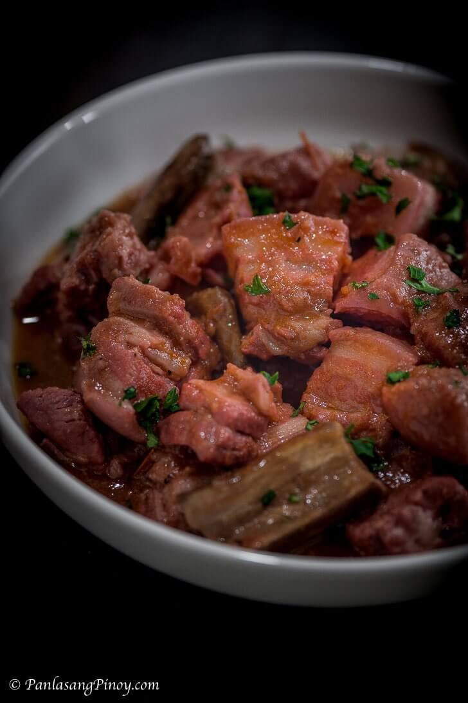

OOHHHH BINAGOONGAN

Pork Belly cooked in tomato and shrimp paste with eggplant. This dish is a winner!
Ingredients
- 1 1/2 lb. pork belly cut into cubes
- 2 pieces tomato cubed
- 1 piece Chinese eggplant sliced
- 3 1/2 cups pork stock
- 3 tablespoons white vinegar
- 4 tablespoons bagoong alamang
- 1 piece onion chopped
- 3 cloves garlic chopped
- 2 teaspoons granulated white sugar
- 1/8 teaspoon ground black pepper
- 3 tablespoons cooking oil
Steps
- Heat oil in a cooking pot.
- Saute onion, garlic, and tomato. Once the onion becomes soft, add the pork belly. Cook until the belly turns light brown.
- Add shrimp paste (bagoong alamang). Stir. Cook for 5 minutes.
- Pour vinegar. Let the mixture boil. Stir and cook for 2 minutes.
- Pour the pork stock into the pot. Cover and let boil. Adjust the heat to medium and continue to cook for 40 minutes or until the pork gets tender. Note: add water or pork stock as needed.
- Add eggplant. Stir. Cover the pot and cook for 3 minutes.
- Season with sugar and ground black pepper.
- Transfer to a serving plate. Serve. Share and enjoy!
Go back